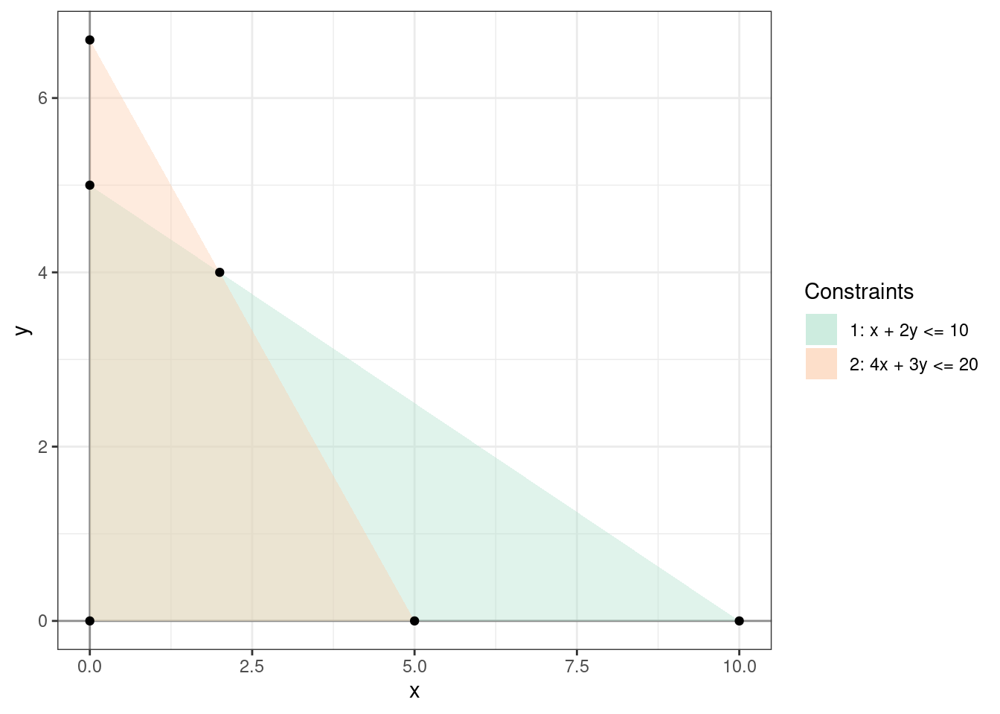
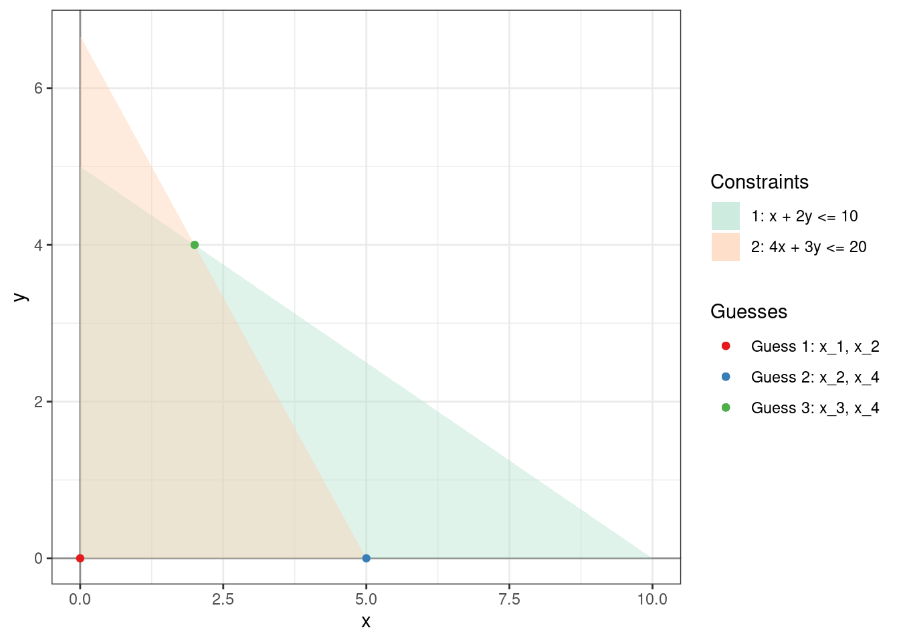

Day 3 Simplex Method - Example
The simplex method jumps from vertex of the feasible region to find the optimal solution. It is best demonstrated using an example. Consider the following linear program.
\[\begin{equation} \begin{array}{rrrrrrrr} \mbox{maximize: } & 1x_1 & + & 1x_2 \\ \mbox{subject to: } & 1x_1 & + & 2x_2 & \le & 10 \\ & 4x_1 & + & 3x_2 & \le & 20 \\ \end{array} \\ x_1, \: x_2 \ge 0 \tag{3.1} \end{equation}\]
The optimal solution is \((x_1, x_2) = (2, 4)\) with objective value \(6\). There are six different points at which the lines corresponding to the constraints intersect. We’ll start with the vertex \((0,0)\) and make our way up to \((2, 4)\) while making sure that we do not leave the feasible region.

The first, and arguably the most important trick in the simplex algorithm is the introduction of slack variables \(x_3\) and \(x_4\), one for each constraint, as shown below, to create a new linear program called a dictionary which is equivalent to (3.1)
\[\begin{equation} \begin{array}{rrrrrrrr} \mbox{maximize: } & \zeta &=&0& + &1x_1 &+& 1x_2 \\ \mbox{subject to: } & x_3 & = & 10 & - &1x_1 & - &2x_2 \\ & x_4 & = & 20 & - &4x_1 & - &3x_2 \\ \end{array} \\ x_1, \: x_2, \: x_3, \: x_4 \ge 0 \tag{3.2} \end{equation}\]
Using these new variables, the points of intersection can be written as intersections of the lines \(x_i = 0\) and \(x_j = 0\), as \(i\) and \(j\) vary over the index set \(\{1, 2, 3, 4\}\). And so to traverse the set of vertices, we simply need to traverse the two element subsets of \(\{x_1 = 0, x_2 = 0, x_3 = 0, x_4 = 0\}\).
- We start with the guess: \(x_1 = 0, x_2 = 0, x_3 = 10, x_4 = 20\).
- At this point, \(\zeta = 0\). We can increase \(\zeta\) by increasing either \(x_1\) or \(x_2\). Let’s choose \(x_1\) and leave \(x_2\) fixed at \(0\).
- To not violate the positivity of \(x_3\), \(x_4\), we can only increase \(x_1\) enough that both \(10 \ge x_1\) and \(20 \ge 4x_1\) remain true. The maximum such \(x_1\) is \(5\) and this makes \(x_4 = 0\).
- We rewrite \(x_1\), \(x_3\), and \(\zeta\) in terms of the new variables that are \(0\), namely \(x_2\) and \(x_4\), to create a new dictionary: \[\begin{equation} \begin{array}{rrrrrrrr} \mbox{maximize: } & \zeta &=&5& + &-0.25x_4 &+& 0.25x_2 \\ \mbox{subject to: } & x_3 & = & 5 & - &-0.25x_4 & - &1.25x_2 \\ & x_1 & = & 5 & - &0.25x_4 & - &0.75x_2 \\ \end{array} \\ x_4, \: x_2, \: x_3, \: x_1 \ge 0 \tag{3.3} \end{equation}\]
- Our new guess is: \(x_1 = 5, x_2 = 0, x_3 = 5, x_4 = 0\).
- The coefficient of \(x_4\) in the objective function is negative. Increasing it will only decrease the objective value. The only variable we can increase in the objective function is \(x_2\).
- To not violate the positivity of \(x_1\), \(x_3\), we can only increase \(x_2\) enough that both \(5 \ge 1.25x_2\) and \(5 \ge 0.75x_2\) remain true. The maximum such \(x_2\) is \(\min(5/1.25, 5/0.75) = 5/1.25 = 4\) and this makes \(x_3 = 0\).
- We rewrite \(x_2\), \(x_1\), and \(\zeta\) in terms of the new variables that are \(0\), namely \(x_3\) and \(x_4\), to create a new dictionary: \[\begin{equation} \begin{array}{rrrrrrrr} \mbox{maximize: } & \zeta &=&6& + &-0.2x_4 &+& -0.2x_3 \\ \mbox{subject to: } & x_2 & = & 4 & - &-0.2x_4 & - &0.8x_3 \\ & x_1 & = & 2 & - &0.4x_4 & - &-0.6x_3 \\ \end{array} \\ x_4, \: x_3, \: x_2, \: x_1 \ge 0 \tag{3.4} \end{equation}\]
- Our new guess is: \(x_1 = 2, x_2 = 4, x_3 = 0, x_4 = 0\).
- The coefficients of both the variables that appear in \(\zeta\) are negative. It is not possible to increase either variable without decreasing the objective value. The simplex algorithm halts.
The optimal objective value \(6\) is the constant coefficient in the final \(\zeta\) and it is attained at \((x_1, x_2) = (2, 4)\).
